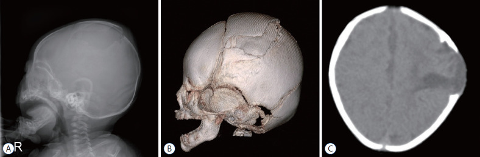
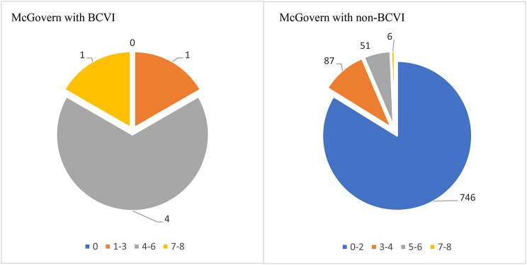
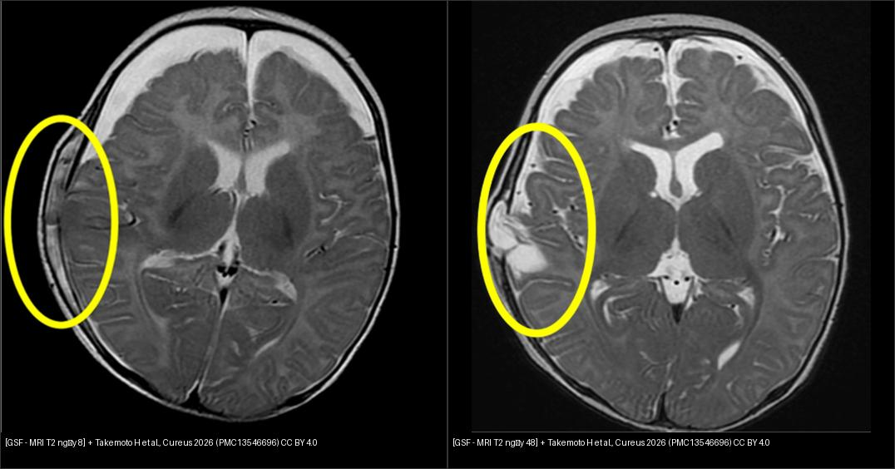
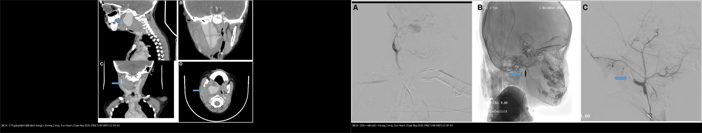

231 — Tổn thương mạch máu não do chấn thương (BCVI) & vỡ sọ tiến triển ở trẻ: Denver, McGovern, CTA/MRA & thời điểm mổ / Pediatric blunt cerebrovascular injury (BCVI) & growing skull fracture
Tags: pattern:chan-thuong-mach-mau pattern:boc-tach-dong-mach pattern:gia-phinh pattern:vo-so-tien-trien vung:co vung:so-nao score:Denver-Biffl score:McGovern protocol:CTA-co protocol:MRA-co protocol:theo-doi
Mức chắc chắn (certainty): ca nguyên văn (verbatim case) — trục bài là ca vỡ sọ tiến triển ở bé gái 3 tháng của Takemoto H et al., Cureus 2026 (PMC13546696, CC BY) và ca giả phình động mạch cảnh trong ở bé trai 5 tuổi của Farooq Z et al., Eur Heart J Case Rep 2025 (PMC12451687, CC BY); các số liệu dịch tễ – ngưỡng sàng lọc – phân độ là tổng hợp y văn, ghi nguồn từng số ở sources.md.
1. Tổng quan bệnh học – cơ chế hình ảnh
- BCVI (blunt cerebrovascular injury) là tổn thương động mạch cảnh hoặc động mạch đốt sống do chấn thương kín, gồm rách nội mạc, bóc tách (dissection), máu tụ trong thành, giả phình (pseudoaneurysm), huyết khối/tắc mạch, đứt rách hoàn toàn. Đây là nguyên nhân đột quỵ thiếu máu não có thể phòng được ở trẻ chấn thương nặng.
- TẠI SAO dễ bỏ sót: tổn thương nằm ở đoạn mạch cổ – nền sọ, triệu chứng có thể xuất hiện muộn sau nhiều giờ đến ngày; trẻ lại thường hôn mê, đa chấn thương, hoặc bị che lấp bởi chấn thương sọ não. Trong đoàn hệ 956 trẻ chấn thương kín, 6 ca BCVI (0,6%) và cả 6 đều có thiếu hụt thần kinh khu trú lúc nhập viện — nhưng không được dùng dấu này để loại trừ, vì y văn vẫn ghi nhận ca không triệu chứng.
- TẠI SAO trẻ khác người lớn: mạch máu trẻ đàn hồi hơn, đường kính nhỏ, sọ mỏng và nền sọ/cột sống cổ chưa cốt hóa hoàn toàn → lực tăng–giảm tốc dễ gây bóc tách đoạn xa hoặc tổn thương trong lỗ cảnh/lỗ đốt sống. Chấn thương sọ não/ xuất huyết nội sọ đi kèm tới 67% ca BCVI; vỡ nền sọ (đặc biệt ống cảnh, xương đá) là yếu tố liên quan mạnh (17–68% các nghiên cứu).
- Vỡ sọ tiến triển (growing skull fracture — GSF) là biến chứng muộn đặc thù của trẻ nhỏ: đường vỡ sọ + rách màng cứng (dural tear) + dính màng nhện, sau đó nhịp đập của não và dịch não tủy đẩy mô não/màng não qua khe vỡ, ngăn cản tạo xương và gây tiêu xương, làm đường vỡ rộng dần. Kết quả là nang màng não – não (leptomeningocele/leptomeningeal cyst) lồi dưới da.
- Dịch tễ – ngưỡng định lượng:
- BCVI trẻ em: 0,03–0,6% chấn thương kín; trong đoàn hệ 956 trẻ, 0,6% (6/956), 70% được chụp CTA, và mô hình sàng lọc McGovern ≥ 3 điểm có Se 100%, Sp 83,8%, PPV 4,0%, NPV 100%, AUC 0,960 — nếu áp dụng hồi cứu có thể giảm 77,5% CTA (668 → 150).
- GSF: 0,05–1,6% các ca vỡ sọ; > 90% xảy ra ở trẻ < 3 tuổi; xương đỉnh hay gặp nhất, rồi xương chẩm, xương trán. Dấu hiệu sớm: khối sưng da đầu đập theo mạch, to lên khi trẻ khóc, đau đầu, co giật, thiếu hụt thần kinh.
- Ca GSF nguyên văn: bé gái 3 tháng, ngã cầu thang, GCS 9, đường vỡ 7–8 mm; MRI ngày 8 nghi rách màng cứng/thoát vị não sớm, CT ngày 27 không thấy đường vỡ rộng thêm, MRI ngày 48 xác định mất liên tục màng cứng + nang + thoát vị não; mổ ngày 75, MRI ngày 119 nang nhỏ lại, theo dõi 2 năm không di chứng.
- TẠI SAO CT có thể "âm tính giả" trong GSF: CT cửa sổ xương chỉ thấy thay đổi xương; trong giai đoạn đầu, rách màng cứng, thoát vị não, nang dịch có thể tiến triển trước khi xương tiêu đủ để thấy đường vỡ rộng. MRI T2 thấy rõ mất liên tục màng cứng, nang dịch, mô não thoát vị — đây là lý do ca trên cần MRI theo dõi có chọn lọc dù CT chưa đổi.

Bé gái 3 tháng: (A) X-quang sọ nghiêng, (B) CT 3D và (C) CT trục — đường vỡ giãn rộng xương đỉnh trái, kèm khối lồi màng não (leptomeningocele) qua khe vỡ. Nguồn: Choi JI, Kim SD, J Korean Neurosurg Soc 2022 (PMC9082117), CC BY-NC 4.0 — nguyên bản.2. Mẫu hình + chẩn đoán phân biệt theo mạch và theo vị trí (Gamut)
- BCVI theo mạch: động mạch cảnh trong (ICA) — đoạn cổ, lỗ cảnh, xương đá; động mạch đốt sống (VA) — đoạn V2 trong lỗ ngang, V3 quanh C1–C2, V4 nội sọ. Động mạch cảnh thường liên quan vỡ nền sọ/xương đá; động mạch đốt sống liên quan gãy/trật cột sống cổ, chấn thương vùng chẩm – cổ.
- BCVI theo hình thái (Denver/Biffl I–V): I — bất thường lòng mạch/hẹp < 25%; II — bóc tách/máu tụ trong thành hẹp ≥ 25%; III — giả phình; IV — tắc hoàn toàn; V — đứt rách, thoát thuốc tự do. Grade càng cao → nguy cơ đột quỵ càng tăng; grade I–II chiếm 50–75% ca.
- Dấu hiệu lâm sàng gợi ý (không chỉ dựa vào GCS): thiếu hụt thần kinh khu trú, GCS < 8, đồng tử không đều (anisocoria), tiếng thổi vùng cổ, bầm quanh mắt (raccoon eyes), máu tụ sau tai (Battle sign), hemotympanum, rò dịch não tủy, đau cột sống cổ giữa, vỡ sọ/nền sọ/mặt/cột sống cổ. Cơ chế hay gặp: tai nạn ô tô (5,9–60%), xe đạp/người đi bộ bị đâm (7,5–23,5%), ngã (5,9–24,2%), bóp cổ (0,9–5,6% có BCVI).
- GSF theo vị trí: thường xương đỉnh (nơi mỏng, hay va đập), sau đó chẩm, trán. Phân biệt với nang màng não – tủy bẩm sinh, u bì trong xương (intradiploic epidermoid), nang xương (bone cyst), thoát vị màng não qua khuyết sọ bẩm sinh.
- Gamut "khối vùng cổ/đầu đập theo mạch": giả phình động mạch cảnh (sau chấn thương/nhiễm trùng), u thể cảnh (carotid body tumor), nang khe mang, áp-xe/cụm hạch, tuyến giáp, dị dạng mạch máu. GSF là khối dưới da vùng đường vỡ, đập theo mạch, to lên khi khóc, không phải khối mạch thật.
3. Bảng so sánh phân biệt (ma trận đối chiếu)
| Thực thể (entity) | Hình ảnh điển hình | Chốt vào (rule-in) | Chốt loại (rule-out) | Gợi ý xác nhận |
|---|---|---|---|---|
| BCVI grade I–II (bóc tách/hẹp) | CTA: bất thường lòng mạch, vạt nội mạc (intimal flap), hẹp < 25% (I) hoặc ≥ 25% (II); không có túi phình | Vạt nội mạc/hẹp lòng mạch trên CTA sau chấn thương kín | Lòng mạch bình thường, không vạt, không hẹp → loại BCVI | CTA cổ 1 mm; MRA khi ổn định; DSA nếu không chắc |
| BCVI grade III (giả phình) | CTA/DSA: túi thuốc cản quang nằm ngoài lòng mạch, cổ túi rõ, có thể kèm máu tụ cạnh mạch | Túi phình sau chấn thương + cổ túi | Bất thường lòng mạch không tạo túi → grade I/II; khối đặc ngấm mạnh kiểu u → nghĩ u thể cảnh | CTA + DSA; theo dõi kích thước; can thiệp khi to lên/chảy máu/đột quỵ |
| BCVI grade IV–V (tắc/đứt) | Không thấy thuốc trong đoạn mạch (IV) hoặc thoát thuốc tự do (V); có thể kèm nhồi máu não | Tắc đoạn mạch + bối cảnh chấn thương; thoát thuốc tự do = V | Co thắt mạch do chấn thương (thường hồi phục, không có vạt/tắc cố định) | DSA; đánh giá tuần hoàn bàng hệ; cân nhắc can thiệp |
| Vỡ sọ tiến triển (GSF) | Đường vỡ rộng dần, bờ xơ cứng/không đều, nang dịch lồi dưới da, mô não thoát vị; MRI T2 thấy mất liên tục màng cứng | Trẻ < 3 tuổi + vỡ sọ + khối da đầu đập theo mạch + đường vỡ rộng trên CT/MRI | Đường khớp sọ bình thường hoặc khuyết xương bẩm sinh không có màng cứng rách | CT cửa sổ xương + MRI T2; theo dõi 1–2 tháng |
| Nang màng não – tủy (leptomeningeal cyst) | Nang dịch thông với khoang dưới nhện, nằm trong khuyết xương, màng cứng mất liên tục | Nang + mất liên tục màng cứng + đường vỡ sọ | Nang không thông với dịch não tủy, màng cứng liên tục → nang khác | MRI T2/CSF flow; mổ xác định |
| U bì/nang trong xương (intradiploic) | Khuyết xương bờ đều, vỏ xương liên tục, có thể vôi hóa, không có màng cứng rách | Tổn thương trong xương, bờ đều, không liên quan đường vỡ | Đường vỡ xuyên vỏ + khối mô mềm → GSF | CT cửa sổ xương; MRI mô mềm |
| Đường khớp sọ bình thường | Sutura: bờ xơ cứng, đối xứng, vỏ xương liên tục, không di lệch | Đường khớp giải phẫu + không mô mềm bất thường | Đường giảm đậm độ cắt qua vỏ xương, không đối xứng → vỡ | CT 3D, so sánh bên đối diện |
Đọc Denver đúng cách
- Denver/Biffl là thang mô tả tổn thương mạch, không phải thang lâm sàng. Grade I–II có thể chỉ theo dõi/kháng kết tập; grade III là giả phình — nguy cơ vỡ/to lên; grade IV–V nguy cơ đột quỵ/tử vong cao, cần DSA và can thiệp khi thích hợp.
- Không suy ra grade từ triệu chứng. Trẻ có thể GCS 15, không thiếu hụt mà vẫn có bóc tách grade I–II; ngược lại GCS thấp thường do chấn thương sọ não phối hợp, không phải do BCVI.
 Denver/Biffl: I — bất thường lòng mạch/hẹp < 25%; II — bóc tách/máu tụ trong thành hẹp ≥ 25%; III — giả phình; IV — tắc; V — đứt rách/thoát thuốc tự do. Nguồn: Murillo A et al., J Clin Med 2026 (PMC13257469), CC BY 4.0.
Denver/Biffl: I — bất thường lòng mạch/hẹp < 25%; II — bóc tách/máu tụ trong thành hẹp ≥ 25%; III — giả phình; IV — tắc; V — đứt rách/thoát thuốc tự do. Nguồn: Murillo A et al., J Clin Med 2026 (PMC13257469), CC BY 4.0.
4. Protocol chụp + hệ phân độ/điểm chuẩn hóa
- Sàng lọc BCVI ở trẻ — không dùng tiêu chí người lớn một cách máy móc:
- McGovern (khuyến nghị cao ở trẻ): GCS ≤ 8 (1 điểm), thiếu hụt thần kinh khu trú (2), vỡ ống cảnh (2), vỡ xương đá thái dương (3), nhồi máu não trên CT (3), cơ chế nặng (2); ≥ 3 điểm → chụp mạch máu. Lưu ý: tiêu chí vỡ xương đá 3 điểm gây nhiều dương tính giả (trong đoàn hệ 956 trẻ, chỉ 2/6 ca BCVI có vỡ xương đá, nhưng 53 ca không BCVI cũng có).
- Memphis: Se 88–91,7%, Sp 71,1–77,5% — nhạy nhất nhưng kém đặc hiệu, dễ tăng CTA.
- Utah: đặc hiệu cao nhưng bỏ sót > 50% BCVI → không dùng một mình.
- A+ (2025): gồm vỡ xương thái dương, xương bướm, trần ổ mắt và tổn thương dây chằng C1–C4; cần thêm dữ liệu tiến cứu.

Trong 6 ca BCVI: 1 ca 3 điểm, 4 ca 5–6 điểm, 1 ca 7–8 điểm. Ở 890 ca không BCVI: 746 ca 0–2 điểm, 87 ca 3–4, 51 ca 5–6, 6 ca 7–8. Vì vậy PPV chỉ 4,0% dù NPV 100% — McGovern dùng để loại trừ, không để khẳng định. Nguồn: Krüger L et al., BMC Emerg Med 2026 (PMC13374070), CC BY 4.0.- CTA là lựa chọn đầu tay khi cấp cứu: lát 1 mm, từ nền sọ đến quỹ đạo trên (hoặc toàn bộ cổ đến quai ĐMC), bơm thuốc cản quang theo bolus tracking, tái tạo MPR/3D. CTA so với DSA: Se 66–98%, Sp 92–100%. MRA không bức xạ nhưng kém hơn CTA (Se 50% với cảnh, 47% với đốt sống) và cần trẻ hợp tác/sedation → dùng khi đã ổn định, không phải lúc cấp cứu.
- DSA là chuẩn vàng, chỉ định khi CTA không kết luận, nghi grade III–V, hoặc can thiệp nội mạch (coil/stent).
- Điều trị BCVI:
- Kháng kết tập tiểu cầu là lựa chọn phổ biến: aspirin 3–5 mg/kg/ngày, tối đa 81 mg (liều dự phòng thứ phát); clopidogrel thay thế hoặc phối hợp khi đặt stent.
- Chống đông (heparin/LMWH) là lựa chọn thay thế; quyết định dựa trên grade, nguy cơ chảy máu nội sọ, chấn thương tạng.
- Theo dõi hình ảnh: CTA lặp 1–2 tuần sau xuất viện (hoặc sớm hơn nếu xấu); ổn định/giảm → giảm liều, nặng lên → tăng điều trị/can thiệp.
- Can thiệp nội mạch khi giả phình to lên, huyết khối, tắc mạch có triệu chứng, hoặc thất bại điều trị nội khoa; không thay thế điều trị nội khoa ở grade thấp.
- GSF — protocol chẩn đoán và theo dõi:
- CT sọ cửa sổ xương lúc chấn thương; đo độ giãn đường vỡ (mm) và di lệch/lún (mm).
- MRI T2 (và T1/FLAIR) khi trẻ < 3 tuổi + vỡ sọ + sưng da đầu lớn + đường vỡ giãn ≥ 4 mm và/hoặc lún/nâng ≥ 3 mm + tổn thương não dưới đường vỡ** — nhóm nguy cơ cao GSF. Một nghiên cứu hồi cứu **190 nhũ nhi** gợi ý theo dõi sát các ca **di lệch > 4 mm và/hoặc lún/nâng > 3 mm.
- Theo dõi lâm sàng 1–2 tháng sau vỡ sọ ở trẻ nhỏ; MRI lặp nếu CT không giải thích được khối sưng/không thấy đường vỡ rộng nhưng lâm sàng nghi ngờ.
- Điều trị: đóng kín màng cứng (watertight dural closure) + cranioplasty; lấy bỏ nang màng não và mô não hoại tử; ghép cân đùi/màng cứng nhân tạo; tái tạo xương bằng xương tự thân hoặc vật liệu nhân tạo khi khuyết lớn. Mổ chương trình khi trẻ ổn định, không chờ thêm nếu có thoát vị não tiến triển.
flowchart TD
A[Chấn thương kín đầu-cổ ở trẻ] --> B{Cơ chế nặng hoặc dấu hiệu gợi ý?}
B -->|GCS ≤8, thiếu hụt thần kinh, vỡ nền sọ/xương đá, vỡ C1-C4, tiếng thổi cổ| C[Tính McGovern; ≥3 điểm]
B -->|Không| D[Đánh giá lại lâm sàng; không CTA thường quy]
C --> E[CTA cổ 1 mm từ nền sọ đến quai ĐMC]
E --> F{Có tổn thương mạch?}
F -->|Không| G[Loại BCVI; theo dõi lâm sàng]
F -->|Có| H[Phân độ Denver I-V]
H --> I{Grade III-V hoặc không kết luận?}
I -->|Có| J[DSA + hội chẩn can thiệp]
I -->|Không| K[Aspirin 3-5 mg/kg/ngày; theo dõi]
J --> L[Coil/stent hoặc phẫu thuật khi cần]
K --> M[CTA lặp 1-2 tuần; giảm liều nếu ổn định]
L --> M
flowchart TD
A[Trẻ < 3 tuổi vỡ sọ] --> B{Đường vỡ giãn ≥4 mm hoặc lún/nâng ≥3 mm?}
B -->|Có| C[Theo dõi sát 1-2 tháng + MRI T2]
B -->|Không| D[Theo dõi lâm sàng; dặn cờ đỏ]
C --> E{Khối sưng đập theo mạch, co giật, thiếu hụt?}
E -->|Có| F[MRI T2: màng cứng, nang, thoát vị não]
E -->|Không| G[CT/MRI lặp theo lịch]
F --> H{Có mất liên tục màng cứng + nang/thoát vị?}
H -->|Có| I[GSF: mổ đóng màng cứng + cranioplasty]
H -->|Không| G
G --> J[Theo dõi đến khi đường vỡ ổn định]

Trái: MRI T2 ngày 8 — nghi rách màng cứng, thoát vị não sớm, chưa có nang rõ. Phải: MRI T2 ngày 48 — mất liên tục màng cứng + nang dịch + thoát vị não rõ, xác định GSF; CT ngày 27 không thấy đường vỡ rộng. Nguồn: Takemoto H et al., Cureus 2026 (PMC13546696), CC BY 4.0. Ảnh ghép letterbox.5. Biến thể bình thường và cạm bẫy
- Cạm bẫy 1 — "CT không thấy đường vỡ rộng nên không phải GSF": ca nguyên văn cho thấy MRI ngày 48 đã có nang + thoát vị não trong khi CT ngày 27 không thấy đường vỡ rộng. Ở trẻ nguy cơ cao, MRI T2 theo dõi có thể phát hiện sớm hơn CT.
- Cạm bẫy 2 — bỏ sót BCVI vì GCS 15/không thiếu hụt: BCVI grade thấp có thể không triệu chứng, nhưng nguy cơ đột quỵ ở trẻ 0–11 tuổi với grade thấp lên tới 2–6,2% — không được xem là "lành".
- Cạm bẫy 3 — McGovern dương tính giả vì vỡ xương đá: tiêu chí vỡ xương đá 3 điểm khiến nhiều trẻ không BCVI vẫn ≥ 3 điểm; cần đọc CTA thay vì tin điểm số tuyệt đối.
- Cạm bẫy 4 — nhầm đường khớp sọ với vỡ sọ: đường khớp có vỏ xương liên tục, bờ xơ cứng, đối xứng; đường vỡ cắt qua vỏ xương, có thể di lệch, kèm mô mềm sưng. Ở trẻ nhỏ, khớp sọ rộng sinh lý cũng dễ nhầm.
- Cạm bẫy 5 — nhầm GSF với u bì/nang xương: u bì trong xương thường bờ đều, vỏ xương liên tục, có vôi hóa, không có màng cứng rách. Chỉ MRI mới phân biệt chắc.
- Cạm bẫy 6 — bỏ qua chấn thương cột sống cổ: BCVI và gãy/trật cột sống cổ thường đi cùng; phải đánh giá cột sống cổ theo NEXUS/Canadian C-Spine Rule (bài 202) trước khi kết luận.
- Cạm bẫy 7 — kháng đông ở trẻ có chấn thương sọ: phải kiểm soát chảy máu ngoài sọ/tạng trước; cân nhắc aspirin thay vì kháng đông khi nguy cơ chảy máu cao; quyết định đa chuyên khoa.
- Biến thể bình thường: lỗ đỉnh (parietal foramina), khớp sọ rộng, mạch máu lõm trên xương, bể dịch dưới màng cứng lành ở nhũ nhi — không có đường vỡ xuyên vỏ, không mô mềm thoát vị.
6. Tự lượng giá — Blind Quiz ngay trên trang tĩnh
Ca 1 — Bé gái 3 tháng, ngã cầu thang, GCS 9, sưng thái dương phải 12 × 8,5 cm. Ảnh dưới là X-quang sọ nghiêng, CT 3D và CT trục.
- Câu hỏi: Mô tả đường vỡ và khối lồi? Chẩn đoán? Bước tiếp theo?
Bấm để hiện đáp án (findings + chẩn đoán)
- Findings: đường vỡ giãn rộng xương đỉnh trái, bờ không đều; khối lồi màng não (leptomeningocele) qua khe vỡ; không có di lệch đường giữa đáng kể.
- Chẩn đoán: vỡ sọ tiến triển (GSF) — tam chứng vỡ sọ + rách màng cứng + thoát vị màng não/não; ở trẻ < 3 tuổi, khối sưng đập theo mạch và to lên khi khóc là dấu lâm sàng kinh điển.
- Xử trí: MRI T2 đánh giá màng cứng/nang/thoát vị; hội chẩn ngoại thần kinh; đóng kín màng cứng + cranioplasty khi xác định. Không chọc dò khối lồi.
- Nguồn ảnh: Choi JI, Kim SD, J Korean Neurosurg Soc 2022 (PMC9082117), CC BY-NC 4.0.
Ca 2 — Cùng bệnh nhi. MRI T2 ngày 8 nghi rách màng cứng; CT ngày 27 không thấy đường vỡ rộng; MRI ngày 48 (ảnh phải) có gì?
- Câu hỏi: Tại sao CT ngày 27 "âm tính" vẫn không loại trừ GSF? MRI ngày 48 thay đổi gì? Khi nào mổ?
Bấm để hiện đáp án (findings + chẩn đoán)
- Findings: ngày 8 — nghi rách màng cứng + thoát vị não sớm, chưa có nang rõ; ngày 48 — mất liên tục màng cứng + nang dịch + thoát vị não tại đúng vị trí đường vỡ.
- Vì sao CT âm: CT chỉ thấy xương; rách màng cứng/nang/thoát vị có thể tiến triển trước khi xương tiêu đủ để đường vỡ rộng thêm. Vì vậy CT bình thường không loại trừ GSF ở trẻ nguy cơ cao.
- Xử trí: mổ chương trình (đóng màng cứng + cranioplasty) khi trẻ ổn định; ca này mổ ngày 75, MRI ngày 119 nang nhỏ lại, theo dõi 2 năm không di chứng.
- Nguồn ảnh: Takemoto H et al., Cureus 2026 (PMC13546696), CC BY 4.0. Ảnh ghép letterbox.
Ca 3 — Bé trai 5 tuổi, khối vùng cổ phải đập theo mạch 3 tháng, sốt từng đợt, tiền sử chấn thương cổ nhẹ. CTA và DSA dưới đây.

- Câu hỏi: Chẩn đoán? Denver grade? Vì sao không chỉ theo dõi? Điều trị?
Bấm để hiện đáp án (findings + chẩn đoán)
- Findings: CTA cổ — túi thuốc cản quang xuất phát từ động mạch cảnh trong phải, kèm máu tụ cạnh hầu; DSA — giả phình (pseudoaneurysm) đoạn cổ ICA, sau đó nút coil và kiểm tra tắc hoàn toàn túi phình, tuần hoàn bàng hệ tốt.
- Chẩn đoán: BCVI grade III (giả phình động mạch cảnh trong) — có thể sau chấn thương nhẹ hoặc nhiễm trùng (ca này có cả tiền sử viêm họng tái diễn và chấn thương cổ).
- Vì sao can thiệp: giả phình to lên có nguy cơ vỡ, chảy máu đường thở/miệng, đột quỵ; ca này có khối chèn ép đường thở nên cần xử lý. Nút coil nội mạch bảo tồn tuần hoàn bàng hệ; theo dõi sau thủ thuật.
- Nguồn ảnh: Farooq Z et al., Eur Heart J Case Rep 2025 (PMC12451687), CC BY 4.0. Ảnh ghép letterbox.
Ca 4 — Trẻ 10 tuổi sau tai nạn xe máy, CTA thấy hẹp lòng động mạch cảnh trong khoảng 40%, không có túi phình, không tắc.
- Câu hỏi: Đây là grade mấy? Nguy cơ? Hướng điều trị và theo dõi?
Bấm để hiện đáp án (findings + chẩn đoán)
- Findings: bóc tách/máu tụ trong thành gây hẹp ≥ 25%, không giả phình, không tắc → Denver/Biffl grade II.
- Nguy cơ: grade thấp nhưng không phải lành — ở trẻ 0–11 tuổi, grade thấp có thể có đột quỵ 2–6,2%; cần kháng kết tập tiểu cầu (aspirin 3–5 mg/kg/ngày, tối đa 81 mg) nếu không có chống chỉ định, và CTA lặp 1–2 tuần.
- Theo dõi: nếu ổn định/giảm → giảm liều; nếu nặng lên → DSA/can thiệp. Không dùng MRA thay CTA trong giai đoạn cấp.
- Nguồn ảnh: Murillo A et al., J Clin Med 2026 (PMC13257469), CC BY 4.0.
Bài liên quan chéo
- 224 – Chấn thương sọ não ở trẻ: Marshall/Rotterdam & DAI
- 232 – Chấn thương đầu nhẹ & concussion ở trẻ
- 202 – Quy tắc chụp cột sống cổ cấp cứu NEXUS/Canadian
- 221 – Chấn thương cột sống
- 662 – Bóc tách động mạch cổ ở trẻ
- 920 – Nút mạch chảy máu tiêu hóa
Ảnh
- Nguồn, giấy phép từng ảnh:
images/CREDITS.md. - Ảnh CC BY-NC (PMC9082117) giữ nguyên bản, không crop/ghép; composite chỉ dùng ảnh CC BY 4.0.
Không dùng để chẩn đoán độc lập khi chưa có người hướng dẫn.